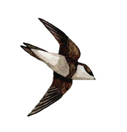

Sand Martin
Because the Sand Martin is one of the earliest migrants to arrive, a lot of old records concentrated on when the first birds arrived rather than maximum counts. The best time to see good numbers of these birds is during heavy rain in March or April.

06/04/67 - Maximum count of 100 birds. (DEP)
21/03/86 - 2 birds. First record for the year
20/03/98 - 3 birds. First record for the year
15/03/99 - 2 birds. First record for the year
21/03/00 - First report (number unknown) on 21/03 with over 100 on 29/03 and 30/03
19/03/01 - 7 birds. First record for the year
17/03/02 - 6 birds. First record for the year. On 28/04 in heavy showers there were 400+ hirundines, a mix of all 3 species
02/04/03 - First report (number unknown) then none until 3 on 23/04
18/03/04 - 4 birds. First record for the year with a dozen or more regular to the end of the month
06/04/04 - 60 birds (compare with 2003 when highest count was in single figures)
16/03/05 - 6 birds. First record for the year. 50 birds on 31/03
08/04/05 - 100+ birds
23/03/06 - 3 birds. First record for the year
16/03/07 - 6 birds. First record for the year. c.50 on 01/04 and 03/04
24/03/08 - 24 birds first record of year in heavy rain. 60 on 06/04/08 when it snowed and again 60 on 07/04/08
2009 - 6 birds on 03/04 with 40+ on 18/04 and 40+ again on 02/09
2010 - Mostly less than 10, but 'hundreds' on 30/03 (a rainy day) and 60+ on 06/04
2011 - A single very early arrival on 09/03. 60+ on 10/08
2012 - 5 on 25/03. 100+ on 28/04 in a flock of 400-500 hirundines (mostly Swallows). 100 on 14/05 together with a similar number of House Martins in the rain
2013 - 6 early arrivals on 10/03 with sleet and snow in the air. Max 50 on 17/04
2014 - 9 on 20/03 max c.100 on 27/03
2015 - 2 on 11/03. Hundreds of hirundines (including Sand Martins) on 06/05 in strong SW winds & showers
2016 - 2 on 13/03. 300+ on 27/03, 200+ on 28/03, 200 on 01/04, 350 on 22/04, 250 on 09/04 and a flock of 1000+ mixed Swallows and Sand Martins on 22/04. Last ones seen on 31/07
2017 - Single on 10/03. c.100 on 29/03 and 100+ on 30/04 in light rain
2018 - 7 on 17/03 in snow shower. Max 30+ on 04/04. Last one seen on 23/09 - no others seen in the summer or autumn
2019 - 3 on 06/03 and 4 the next day are the earliest ever so far (DWH). Highest counts of 150+ on 03/04 and 200+ on 04/04
2020 - 1 on 09/03 (early date DWH). max 21 on 21/03, last ones seen 5+ on 11/05
2021 - 2 on 04/03 (earliest ever date - Julian Thomas). 2 on 05/03 (SH,DWH) and at least 2 seen each day then through March with 6 birds on 07/03, building to 80 birds on 28/03. April started with c.60 on 01/04 and built to c.150 on 06/04. Last birds of the year were 12+ on 19/08. None recorded in June or July
2022 - 2 on 09/03 (early date DWH). 7 on 12/03, 3 on 31/031 on 07/04 and 25+ on 10/04
2023 - 4 on 13/03 in 50mph SW gales. 14 on 15/03 and 30 on 16/03. c.100 on 31/03. None specifically seen after 03/04, though there were mixed hirundine flocks of up to 80 birds during the rest of April
2024 - 11+ on 14/03. c.20 on 23/03 when the first House Martin was also seen. c.12 at dusk on 20/03. Up to 20+ in the first half of April, but none for the rest of the year apart from a couple of small groups of Hirundines, not specifically identified in May.
2025 - 4 in drizzle on the early date of 07/03 and one seen the following day too. Up to 20 seen during March and about 40 on 03/04 and 05/04. None after 3 seen on 22/04